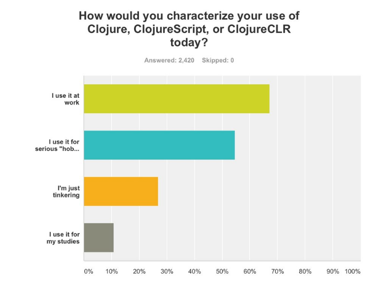
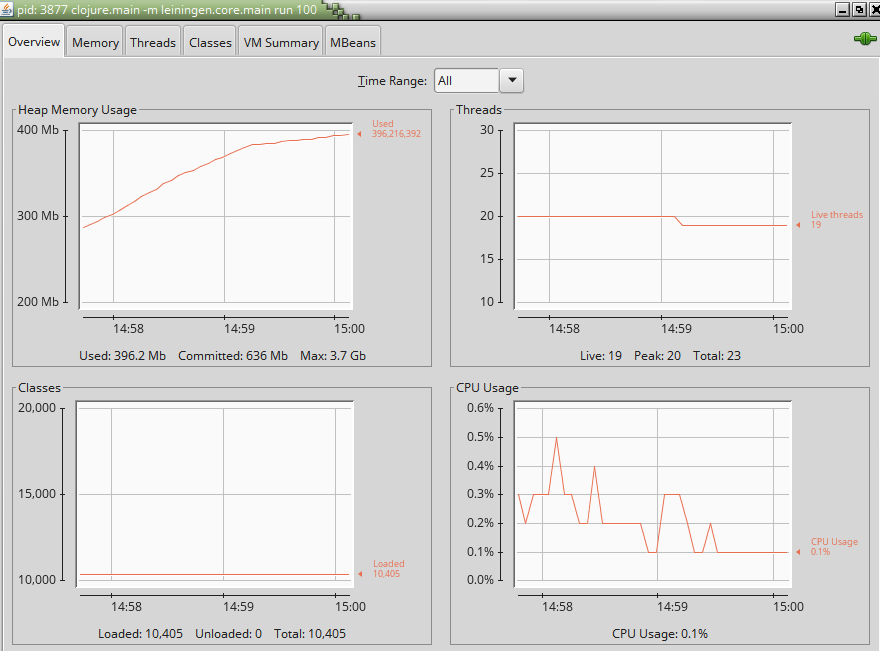
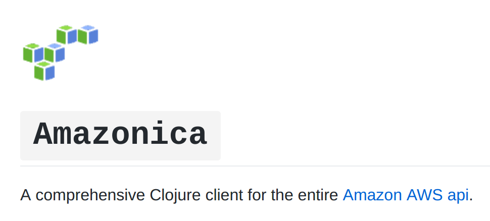

Clojure Backend Services from the Trenches
By Markus Hjort / @mhjort
Q: Clojure at work?
A: My work 2013-2017
Polyglot backend microservices à la DevOps
- Yle: Clojure (JVM), Scala, Node.js
- Adtile: Clojure (JVM), Rails, Node.js
From the trenches
Q: Why JVM?
A: 222852 Java libraries in GitHub (Q4/14)
http://githut.info
A: Embrace the host language
(doto (AmazonS3Client.)
(.withEndpoint custom-end-point)
(.setS3ClientOptions (-> (S3ClientOptions.)
(.withPathStyleAccess true)))))
Monitoring & profiling
Parallelism
(pmap process-object objects)]) # JVM Thread pool
(r/fold merge-counts
count-words
(s/split text #"\s+"))) # Java7 Fork/Join
Robust Tech for Grumpy Old Senior Developers
Q: How do we run our code?
Option 1: Uberjar with embedded http-kit or Jetty
Option 2: AWS Lambda function
Q: How do we select the libraries we use?
Prio 1: clojure.core
Prio 2: Native Clojure libraries
e.g. ring, hiccup
Prio 3: Clojure libraries with minimal dependencies
e.g. http-kit
Prio 4: Simple wrappers around Java API
e.g. clj-http, clj-time
[clj-http "3.4.1"]
[commons-codec "1.10"]
[commons-io "2.5"]
[org.apache.httpcomponents/httpasyncclient "4.1.2"]
[org.apache.httpcomponents/httpcore-nio "4.4.5"]
[org.apache.httpcomponents/httpclient "4.5.2"]
[commons-logging "1.2"]
[org.apache.httpcomponents/httpcore "4.4.5"]
[org.apache.httpcomponents/httpmime "4.5.2"]
[potemkin "0.4.3"]
[clj-tuple "0.2.2"]
[riddley "0.1.12"]
[slingshot "0.12.2"]
Prio 5: Java APIs directly
e.g AWS Java SDK instead of Amazonica
Q: How do we test Clojure code?
clojure.test
Stubbing using with-redefs
(deftest returns-error-when-replication-fails
(with-redefs [s3/upload (fn [& _]
(throw (Exception. "Simulated")))]
(run-the-test)))
Q: How do we maintain large code bases without types?
A: We don't :D
Typesystem not mature enough
With microservices it is more important to specify and validate in RUNTIME inputs and outputs of services
Schema validation
Q: How do we manage state?
atom(s)
(defonce ads (atom {}))
(defn update-state []
(try
(reset! ads (get-all-ads))
(info "Updated ads data with" (count @ads) "ads.")
(catch Exception e
(error e "Failed to update ads"))))
Clojure is an opinionated language
Maybe you should be too
Thanks!
@mhjort
- By Symbol question.svg: Erin Silversmith derivative work: Kayau (Symbol question.svg:) [Public domain], via Wikimedia Commons:
- By Muriel blondeau (collection de l'auteur) [CC BY-SA 3.0 (http://creativecommons.org/licenses/by-sa/3.0)], via Wikimedia Commons